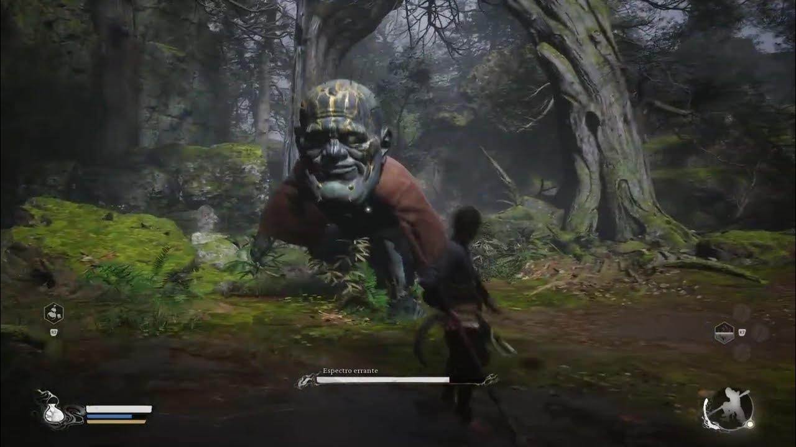
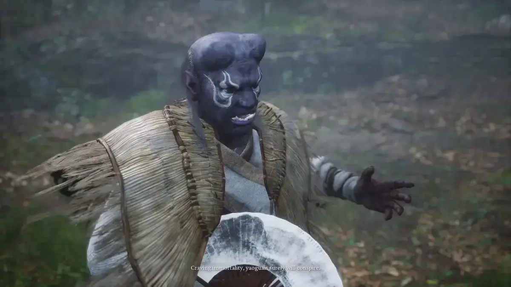
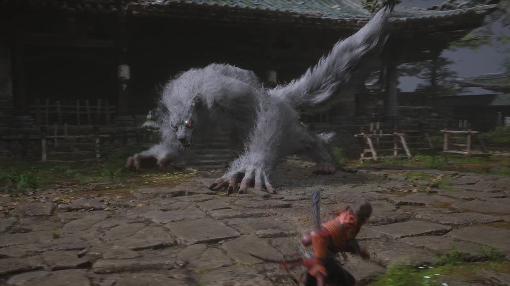

Destacados

Espectro Errante
El Espectro Errante es un mini-jefe opcional pero extremadamente peligroso para el inicio del
juego. Tiene un cuerpo enorme, movimientos lentos y pesados, pero cada golpe quita una cantidad
absurda de vida. Su patrón se basa en ataques amplios en área, saltos y golpes descendentes que
castigan mal el posicionamiento.
No es rápido, pero controla el espacio: si te acercas sin paciencia, te borra. Está pensado para
enseñarte que no todo debe enfrentarse de inmediato y que observar, esquivar con calma y
castigar solo al final de sus animaciones es clave. Vencerlo temprano es una prueba de control y
disciplina más que de daño.

Guangmou
Guangmou es uno de los jefes más molestos del Capítulo 1 porque no pelea solo. Invoca serpientes
(cobras) que atacan de forma constante mientras él lanza proyectiles venenosos y controla el
área del combate.
No destaca por fuerza bruta, sino por saturar la arena: si te quedas quieto o te obsesionas con
pegarle, el veneno y las serpientes te acorralan rápido. El combate te obliga a moverte, limpiar
ayudantes y atacar con paciencia, castigando el juego impulsivo.

Noble de Túnica Blanca
El Noble de Túnica Blanca combate dentro de un río poco profundo, lo que vuelve todo más tenso.
Es rápido, elegante y muy castigador: encadena estocadas largas y deslizamientos que aprovechan
el espacio abierto del agua. No tiene mucha vida, pero presiona sin descanso y castiga rodar en
pánico.
El duelo exige lectura fina de animaciones, esquivas precisas y ataques cortos. Aquí el juego te
deja claro que la calma y el timing valen más que la fuerza bruta. Si pierdes el ritmo, te
arrincona rápido.

Lingxuzi
Lingxuzi es un lobo demoníaco gigante, rápido y muy agresivo. A diferencia de jefes lentos, este
no te da respiro: salta largas distancias, embiste en línea recta y encadena ataques que
castigan esquivar tarde o atacar de más. Su arena cerrada hace que el error se sienta
inmediato.
El combate premia paciencia y control de stamina. Golpear solo tras sus embestidas y retirarte
rápido es clave; si te quedas, te rompe el ritmo. Es uno de los jefes que mejor enseña a no
jugar greedy desde temprano.